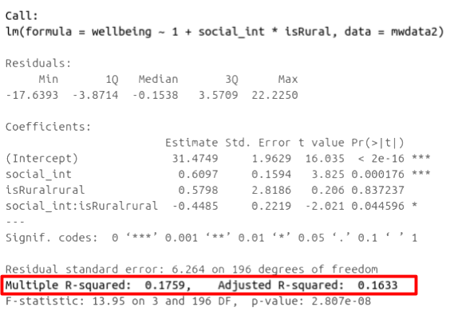
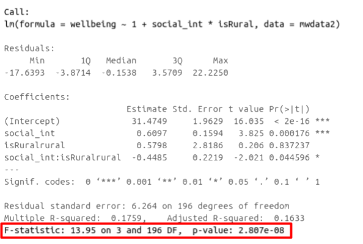
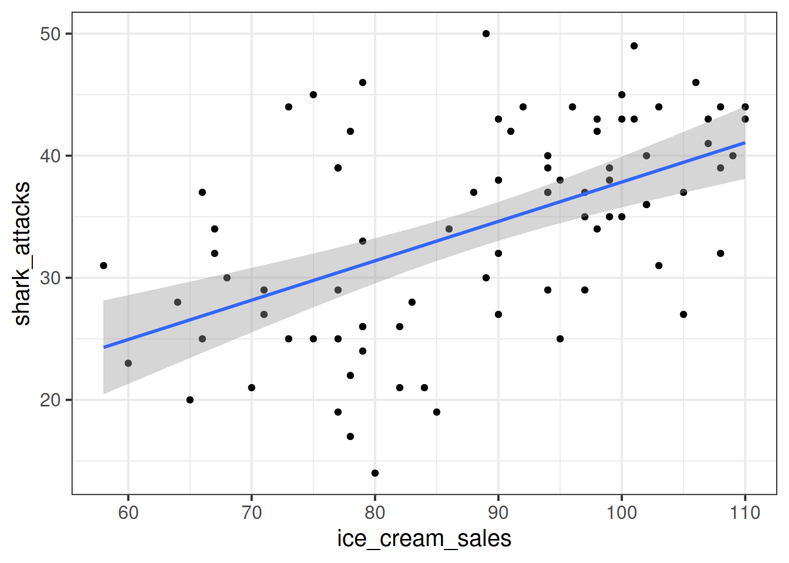
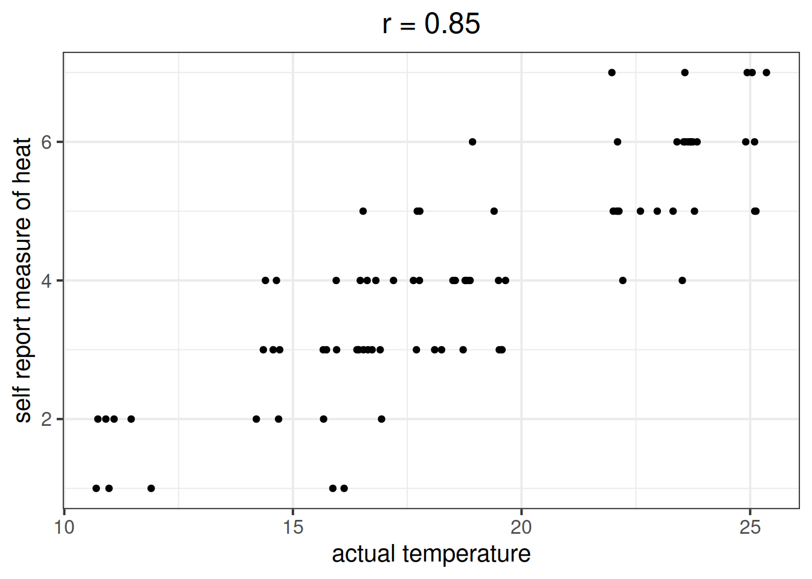

PRE-LAB ACTIVITIES
Before attempting the lab please read ?.
LEARNING OBJECTIVES
We know from our work on simple linear regression that the R-squared can be obtained as: \[ R^2 = \frac{SS_{Model}}{SS_{Total}} = 1 - \frac{SS_{Residual}}{SS_{Total}} \]
However, when we add more and more predictors into a multiple regression model, \(SS_{Residual}\) cannot increase, and may decrease by pure chance alone, even if the predictors are unrelated to the outcome variable. Because \(SS_{Total}\) is constant, the calculation \(1-\frac{SS_{Residual}}{SS_{Total}}\) will increase by chance alone.
An alternative, the Adjusted-\(R^2\), does not necessarily increase with the addition of more explanatory variables, by including a penalty according to the number of explanatory variables in the model. It is not by itself meaningful, but can be useful in determining what predictors to include in a model. \[ Adjusted{-}R^2=1-\frac{(1-R^2)(n-1)}{n-k-1} \\ \quad \\ \begin{align} & \text{Where:} \\ & n = \text{sample size} \\ & k = \text{number of explanatory variables} \\ \end{align} \]
In R, you can view the mutiple and adjusted \(R^2\) at the bottom of the output of summary(<modelname>):

Figure 1: Multiple regression output in R, summary.lm(). R-squared highlighted
As in simple linear regression, the F-ratio is used to test the null hypothesis that all regression slopes are zero.
It is called the F-ratio because it is the ratio of the how much of the variation is explained by the model (per paramater) versus how much of the variation is unexplained (per remaining degrees of freedom).
\[ F_{df_{model},df_{residual}} = \frac{MS_{Model}}{MS_{Residual}} = \frac{SS_{Model}/df_{Model}}{SS_{Residual}/df_{Residual}} \\ \quad \\ \begin{align} & \text{Where:} \\ & df_{model} = k \\ & df_{error} = n-k-1 \\ & n = \text{sample size} \\ & k = \text{number of explanatory variables} \\ \end{align} \]
In R, at the bottom of the output of summary(<modelname>), you can view the F ratio, along with an hypothesis test against the alternative hypothesis that the at least one of the coefficients \(\neq 0\) (under the null hypothesis that all coefficients = 0, the ratio of explained:unexplained variance should be approximately 1):

Figure 2: Multiple regression output in R, summary.lm(). F statistic highlighted
Run the code below. It reads in the wellbeing/rurality study data, and creates a new binary variable which specifies whether or not each participant lives in a rural location.
library(tidyverse)
mwdata2<-read_csv("data/wellbeing_rural.csv")
mwdata2 <-
mwdata2 %>% mutate(
isRural = ifelse(location=="rural","rural","notrural")
)
head(mwdata2)## # A tibble: 6 x 8
## age outdoor_time social_int routine wellbeing location steps_k isRural
## <dbl> <dbl> <dbl> <dbl> <dbl> <chr> <dbl> <chr>
## 1 28 12 13 1 36 rural 21.6 rural
## 2 56 5 15 1 41 rural 12.3 rural
## 3 25 19 11 1 35 rural 49.8 rural
## 4 60 25 15 0 35 rural NA rural
## 5 19 9 18 1 32 rural 48.1 rural
## 6 34 18 13 1 34 rural 67.3 ruralFits the following model, and assign it the name “wb_mdl1”.
Does the model provide a better fit to the data than a model with no explanatory variables? (i.e., test against the alternative hypothesis that at least one of the explanatory variables significantly predicts wellbeing scores).
If (and only if) two models are nested (one model contains all the predictors of the other and is fitted to the same data), we can compare them using an incremental F-test.
This is a formal test of whether the additional predictors provide a better fitting model.
Formally this is the test of:
The F-ratio for comparing the residual sums of squares between two models can be calculated as:
\[ F_{(df_R-df_F),df_F} = \frac{(SSR_R-SSR_F)/(df_R-df_F)}{SSR_F / df_F} \\ \quad \\ \begin{align} & \text{Where:} \\ & SSR_R = \text{residual sums of squares for the restricted model} \\ & SSR_F = \text{residual sums of squares for the full model} \\ & df_R = \text{residual degrees of freedom from the restricted model} \\ & df_F = \text{residual degrees of freedom from the full model} \\ \end{align} \]
In R, we can conduct an incremental F-test by constructing two models, and passing them to the anova() function: anova(model1, model2).
The F-ratio you see at the bottom of summary(model) is actually a comparison between two models: your model (with some explanatory variables in predicting \(y\)) and the null model. In regression, the null model can be thought of as the model in which all explanatory variables have zero regression coefficients. It is also referred to as the intercept-only model, because if all predictor variable coefficients are zero, then the only we are only estimating \(y\) via an intercept (which will be the mean - \(\bar y\)).
Use the code below to fit the null model.
Then, use the anova() function to perform a model comparison between your earlier model (wb_mdl1) and the null model.
Check that the F statistic is the same as that which is given at the bottom of summary(wb_mdl1).
null_model <- lm(wellbeing ~ 1, data = mwdata2)
Does weekly outdoor time explain a significant amount of variance in wellbeing scores over and above weekly social interactions and location (rural vs not-rural)?
Provide an answer to this question by fitting and comparing two models (one of them you may already have fitted in an earlier question).
A common goal for researchers is to determine which variables matter (and which do not) in contributing to some outcome variable. A common approach to answer such questions is to consider whether some variable \(X\)’s contribution remains significant after controlling for variables \(Z\).
The reasoning:
In multiple regression, we might fit the model \(Y = \beta_0 + \beta_1 \cdot X + \beta_2 \cdot Z + \epsilon\) and conclude that \(X\) is a useful predictor of \(Y\) over and above \(Z\) based on the estimate \(\hat \beta_1\), or via model comparison between that model and the model without \(Z\) as a predictor (\(Y = \beta_0 + \beta_1 \cdot X + \epsilon\)).
A Toy Example
Suppose we have monthly data over a seven year period which captures the number of shark attacks on swimmers each month, and the number of ice-creams sold by beach vendors each month.
Consider the relationship between the two:

We can fit the linear model and see a significant relationship between ice cream sales and shark attacks:
sharkdata <- read_csv("data/sharks.csv")
shark_mdl <- lm(shark_attacks ~ ice_cream_sales, data = sharkdata)
summary(shark_mdl)##
## Call:
## lm(formula = shark_attacks ~ ice_cream_sales, data = sharkdata)
##
## Residuals:
## Min 1Q Median 3Q Max
## -17.3945 -4.9268 0.5087 4.8152 15.7023
##
## Coefficients:
## Estimate Std. Error t value Pr(>|t|)
## (Intercept) 5.58835 5.19063 1.077 0.285
## ice_cream_sales 0.32258 0.05809 5.553 3.46e-07 ***
## ---
## Signif. codes: 0 '***' 0.001 '**' 0.01 '*' 0.05 '.' 0.1 ' ' 1
##
## Residual standard error: 7.245 on 81 degrees of freedom
## Multiple R-squared: 0.2757, Adjusted R-squared: 0.2668
## F-statistic: 30.84 on 1 and 81 DF, p-value: 3.461e-07Does the relationship between ice cream sales and shark attacks make sense? What might be missing from our model?
You might quite rightly suggest that this relationship is actually being driven by temperature - when it is hotter, there are more ice cream sales and there are more people swimming (hence more shark attacks).
Is \(X\) (the number of ice-cream sales) a useful predictor of \(Y\) (numbers of shark attacks) over and above \(Z\) (temperature)?
We might answer this with a multiple regression model including both temperature and ice cream sales as predictors of shark attacks:
shark_mdl2 <- lm(shark_attacks ~ ice_cream_sales + temperature, data = sharkdata)
summary(shark_mdl2)##
## Call:
## lm(formula = shark_attacks ~ ice_cream_sales + temperature, data = sharkdata)
##
## Residuals:
## Min 1Q Median 3Q Max
## -15.5359 -3.1353 0.1088 3.1064 17.2566
##
## Coefficients:
## Estimate Std. Error t value Pr(>|t|)
## (Intercept) 1.73422 4.27917 0.405 0.686
## ice_cream_sales 0.08588 0.05997 1.432 0.156
## temperature 1.31868 0.20457 6.446 8.04e-09 ***
## ---
## Signif. codes: 0 '***' 0.001 '**' 0.01 '*' 0.05 '.' 0.1 ' ' 1
##
## Residual standard error: 5.914 on 80 degrees of freedom
## Multiple R-squared: 0.5233, Adjusted R-squared: 0.5114
## F-statistic: 43.91 on 2 and 80 DF, p-value: 1.345e-13
What do you conclude?
It appears that numbers of ice cream sales is not a significant predictor of sharks attack numbers over and above the temperature.
However… In psychology, we can rarely observe and directly measure the constructs which we are interested in (for example, personality traits, intelligence, emotional states etc.). We rely instead on measurements of, e.g. behavioural tendencies, as a proxy for personality traits.
Let’s suppose that instead of including temperature in degrees celsius, we asked a set of people to self-report on a scale of 1 to 7 how hot it was that day. This measure should hopefully correlate well with the actual temperature, however, there will likely be some variation:

Is \(X\) (the number of ice-cream sales) a useful predictor of \(Y\) (numbers of shark attacks) over and above \(Z\) (temperature - measured on our self-reported heat scale)?
shark_mdl2a <- lm(shark_attacks ~ ice_cream_sales + sr_heat, data = sharkdata)
summary(shark_mdl2a)##
## Call:
## lm(formula = shark_attacks ~ ice_cream_sales + sr_heat, data = sharkdata)
##
## Residuals:
## Min 1Q Median 3Q Max
## -12.4576 -3.7818 -0.0553 3.6712 15.2155
##
## Coefficients:
## Estimate Std. Error t value Pr(>|t|)
## (Intercept) 8.96066 4.37145 2.050 0.04366 *
## ice_cream_sales 0.14943 0.05643 2.648 0.00974 **
## sr_heat 2.96130 0.49276 6.010 5.24e-08 ***
## ---
## Signif. codes: 0 '***' 0.001 '**' 0.01 '*' 0.05 '.' 0.1 ' ' 1
##
## Residual standard error: 6.051 on 80 degrees of freedom
## Multiple R-squared: 0.501, Adjusted R-squared: 0.4885
## F-statistic: 40.16 on 2 and 80 DF, p-value: 8.394e-13
What do you conclude?
Moral of the story: be considerate of what exactly it is that you are measuring.
This example was adapted from Westfall and Yarkoni, 2020 which provides a much more extensive discussion of incremental validity and type 1 error rates.
We can also compare models using information criterion statistics, such as AIC and BIC. These combine information about the sample size, the number of model parameters and the residual sums of squares (\(SS_{residual}\)). Models do not need to be nested to be compared via AIC and BIC, but they need to have been fit to the same dataset.
For both of these fit indices, lower values are better, and both include a penalty for the number of predictors in the model, although BIC’s penalty is harsher:
\[ AIC = n\,\text{ln}\left( \frac{SS_{residual}}{n} \right) + 2k \\ \quad \\ BIC = n\,\text{ln}\left( \frac{SS_{residual}}{n} \right) + k\,\text{ln}(n) \\ \quad \\ \begin{align} & \text{Where:} \\ & SS_{residual} = \text{sum of squares residuals} \\ & n = \text{sample size} \\ & k = \text{number of explanatory variables} \\ & \text{ln} = \text{natural log function} \end{align} \]
In R, we can calculate AIC and BIC by using the AIC() and BIC() functions.
The code below fits 5 different models:
model1 <- lm(wellbeing ~ social_int + outdoor_time, data = mwdata2)
model2 <- lm(wellbeing ~ social_int + outdoor_time + age, data = mwdata2)
model3 <- lm(wellbeing ~ social_int + outdoor_time + routine, data = mwdata2)
model4 <- lm(wellbeing ~ social_int + outdoor_time + routine + age, data = mwdata2)
model5 <- lm(wellbeing ~ social_int + outdoor_time + routine + steps_k, data = mwdata2)For each of the below pairs of models, what methods are/are not available for us to use for comparison and why?
model1 vs model2model2 vs model3model1 vs model4model3 vs model5